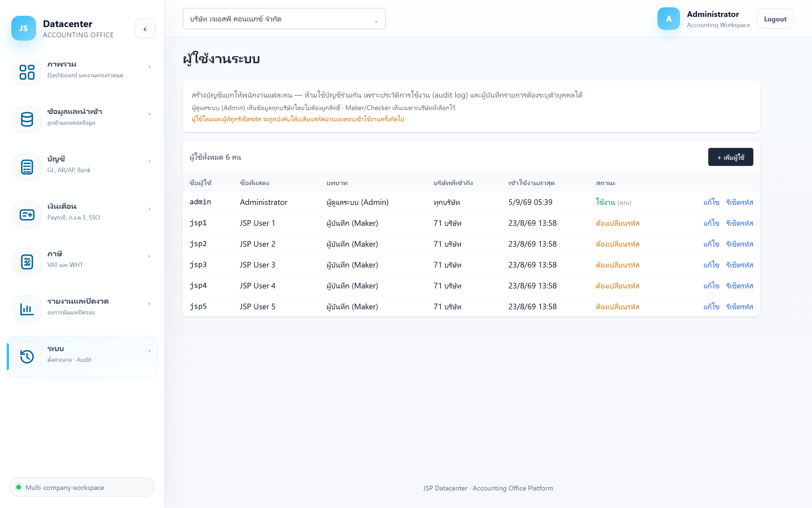

ผู้ใช้งานระบบ
จัดการบัญชีพนักงานของสำนักงาน — บทบาท, สิทธิ์เข้าถึงรายบริษัท, รีเซ็ตรหัสผ่าน และปลดล็อกบัญชีที่ถูกล็อกจากการกรอกรหัสผิด
เมนูนี้เห็นเฉพาะผู้ใช้ที่มีบทบาท ผู้ดูแลระบบ (Admin)
1. การเข้าใช้งาน
เปิดเมนู ระบบ → ผู้ใช้งานระบบ (ไม่ต้องเลือกบริษัท เพราะจัดการทั้งสำนักงาน)
2. อ่านตารางผู้ใช้

| คอลัมน์ | ความหมาย |
|---|---|
| ชื่อผู้ใช้ | ชื่อที่ใช้เข้าสู่ระบบ — บัญชีของตัวเองจะมีป้าย (คุณ) |
| ชื่อที่แสดง | ชื่อจริงที่แสดงในระบบและในประวัติการใช้งาน |
| บทบาท | ดูตารางบทบาทด้านล่าง |
| บริษัทที่ดูแล | จำนวนบริษัทที่ผู้ใช้คนนี้ ทำรายการได้ (Admin = ทุกบริษัท) — ส่วนการ ดู ข้อมูลนั้นทุกคนดูได้ทุกบริษัทอยู่แล้ว |
| เข้าใช้งานล่าสุด | ใช้ดูว่าบัญชีไหนไม่ได้ใช้แล้ว ควรปิด |
| สถานะ | ใช้งาน · ปิดใช้งาน · ถูกล็อก · ต้องเปลี่ยนรหัส |
| แก้ไข / รีเซ็ตรหัส / ปลดล็อก | ปุ่มท้ายแถว (ปลดล็อกขึ้นเฉพาะบัญชีที่ถูกล็อก) |
3. สิทธิ์ 2 ชั้น — “ดู” กับ “ทำรายการ”
ระบบแยกสิทธิ์เป็นสองชั้น เพื่อให้ทีมช่วยงานข้ามบริษัทกันได้ โดยที่ยังมีเจ้าของงานชัดเจน
| ชั้นสิทธิ์ | ใครทำได้ | ครอบคลุมอะไร |
|---|---|---|
| ดู | ผู้ใช้ทุกคน ทุกบริษัท |
งบการเงิน, งบทดลอง, แยกประเภท, ภาษี, รายงาน, ปฏิทินงาน, workboard |
| ทำรายการ | เฉพาะผู้ดูแลของบริษัทนั้น (ติ๊กไว้ในข้อ 4) |
บันทึก / แก้ไข / ลบ, นำเข้า Express, ปิดงวด, ปิดงาน, มอบหมายงาน, และการดูข้อมูลเงินเดือน |
ทะเบียนพนักงาน เลขบัตรประชาชน เงินเดือนรายคน และเอกสารแนบของพนักงาน เป็นข้อมูลส่วนบุคคลตาม PDPA — ดูได้เฉพาะผู้ดูแลบริษัทนั้น ต่างจากข้อมูลบัญชีทั่วไปที่ทุกคนดูได้
3.1 บทบาท 4 ระดับ
| บทบาท | ทำอะไรได้ |
|---|---|
| ผู้ดูแลระบบ (Admin) | ทำรายการได้ทุกบริษัท + ตั้งค่ากลางทั้งหมด + ประวัติการใช้งาน |
| หัวหน้างาน (Supervisor) | งานรายบริษัทเหมือน Maker · เข้าเมนูระบบได้ทั้งหมดยกเว้นประวัติการใช้งาน (จัดการผู้ใช้, โปรไฟล์สำนักงาน, ทะเบียนผู้สอบ/ผู้ทำบัญชี, ผู้ลงนาม, อัตรา ปกส.) |
| ผู้บันทึก (Maker) | ดูได้ทุกบริษัท · บันทึก/นำเข้าข้อมูล และดูเงินเดือน เฉพาะบริษัทที่ดูแล |
| ผู้ตรวจ (Checker) | ดูได้ทุกบริษัท · บันทึก/แก้ไข และดูเงินเดือน เฉพาะบริษัทที่ดูแล |
Supervisor จัดการผู้ใช้ได้ จึงสามารถสร้างบัญชี Admin หรือเลื่อนตัวเองเป็น Admin ได้ด้วย — ให้บทบาทนี้กับคนที่ไว้ใจระดับเดียวกับ Admin เท่านั้น (สิ่งที่กันไว้จริงคือประวัติการใช้งาน ซึ่ง Supervisor เปิดดูไม่ได้ ทั้งหน้าจอและ API)
เมนู ระบบ แสดงไม่เท่ากันตามบทบาท:
| บทบาท | เห็นอะไรใต้เมนู “ระบบ” |
|---|---|
| Admin | ครบทั้ง 8 รายการ |
| Supervisor | 7 รายการ — ทุกอย่างยกเว้นประวัติการใช้งาน |
| Maker / Checker | รายการเดียว — เปลี่ยนรหัสผ่าน |
พิมพ์ URL เข้าตรง ๆ ก็ไม่ได้ — ระบบเด้งกลับหน้าภาพรวม และ API ปฏิเสธอีกชั้น (ยกเว้นทะเบียนผู้สอบ/ผู้ทำบัญชีที่ยังอ่านได้ เพราะหน้า ภ.ง.ด.50 ต้องใช้เลือกชื่อผู้ลงนาม — แต่เพิ่ม/แก้/ลบ ได้เฉพาะ Admin)
Admin ทำรายการและแก้ตั้งค่ากลางที่กระทบทุกบริษัทได้ — พนักงานทั่วไปควรเป็น Maker หรือ Checker แล้วติ๊กบริษัทที่รับผิดชอบจริงเท่านั้น
4. เพิ่ม / แก้ไขผู้ใช้
| ช่อง | คำอธิบาย |
|---|---|
| ชื่อผู้ใช้ (สำหรับเข้าสู่ระบบ) * | ตั้งได้ครั้งเดียว แก้ทีหลังไม่ได้ เพราะใช้อ้างอิงในประวัติการใช้งาน |
| ชื่อที่แสดง * | ชื่อจริง ใช้แสดงทั่วระบบ |
| อีเมล | ใช้ แจ้งเตือนงานที่มอบหมาย — ถ้าไม่กรอก ผู้ใช้จะไม่ได้รับอีเมลเตือนงานค้าง |
| บทบาท | เลือก 1 ใน 3 — มีคำอธิบายกำกับใต้ช่อง |
| รหัสผ่านชั่วคราว * | เฉพาะตอนสร้างใหม่ — ผู้ใช้ต้องเปลี่ยนเองตอนเข้าครั้งแรก |
| สถานะ | ใช้งาน / ปิดใช้งาน |
| บริษัทที่ดูแล — ทำรายการได้ | ติ๊กเลือกรายบริษัท — ไม่แสดงสำหรับ Admin เพราะทำรายการได้ทุกบริษัทอยู่แล้ว ติ๊กได้ หลายคนต่อหนึ่งบริษัท เมื่อแบ่งงานกันหรือมีคนสำรอง มี ช่องค้นหาชื่อบริษัท อยู่เหนือรายการ — พิมพ์บางส่วนของชื่อก็เจอ (เช่น พิมพ์ เจ เพื่อกรองเฉพาะบริษัทที่มีคำนี้) |
ขณะที่พิมพ์คำค้นอยู่ ปุ่มลัดจะเปลี่ยนเป็น เลือกที่ค้นเจอ / ล้างที่ค้นเจอ ซึ่งทำเฉพาะรายการที่ตรงคำค้น — บริษัทที่ติ๊กไว้ก่อนหน้าแต่ไม่ตรงคำค้น จะไม่ถูกแตะต้อง และระบบจะบอกจำนวนไว้ข้างปุ่ม (ล้างช่องค้นหาเพื่อดูรายการทั้งหมด)
ช่องนี้ ไม่ใช่ การเปิดให้เห็นข้อมูล (ทุกคนเห็นทุกบริษัทอยู่แล้ว) แต่คือการมอบสิทธิ์ บันทึก/แก้ไข/นำเข้า/ปิดงวด และ ดูข้อมูลเงินเดือน ของบริษัทนั้น — ติ๊กเท่าที่รับผิดชอบจริง
ระบบจะขึ้นแถบ “👁 ดูอย่างเดียว” ใต้หัวจอ และปุ่มบันทึกต่าง ๆ จะใช้ไม่ได้ — ถ้าต้องแก้ไขจริง ให้ผู้ดูแลระบบเพิ่มชื่อคุณเป็นผู้ดูแลบริษัทนั้น
พนักงานลาออกให้เปลี่ยนสถานะเป็น ปิดใช้งาน — ประวัติการทำงานที่ผูกกับบัญชีนั้นยังอยู่ครบ ตรวจย้อนหลังได้
5. รีเซ็ตรหัสผ่าน
กด รีเซ็ตรหัส ท้ายแถว แล้วตั้งรหัสชั่วคราวให้ (8 ตัวขึ้นไป มีตัวอักษร+ตัวเลข)
- บังคับให้ผู้ใช้เปลี่ยนรหัสเองตอนเข้าใช้งานครั้งถัดไป
- ตัดการเข้าใช้งานที่ค้างอยู่ทั้งหมด — ผู้ใช้ที่ล็อกอินค้างอยู่จะถูกดีดออกทันที
แจ้งรหัสชั่วคราวให้เจ้าตัวผ่านช่องทางที่ปลอดภัย ไม่ควรส่งในแชทกลุ่ม
6. ปลดล็อกบัญชี
บัญชีที่กรอกรหัสผิดหลายครั้งจะขึ้นสถานะ ถูกล็อก และมีปุ่ม ปลดล็อก ท้ายแถว — กดเพื่อให้ผู้ใช้เข้าระบบได้อีกครั้ง (รหัสผ่านเดิมยังใช้ได้)
มักแปลว่าผู้ใช้จำรหัสไม่ได้จริง — รีเซ็ตรหัสให้ใหม่จะจบปัญหากว่าการปลดล็อกซ้ำ ๆ
7. เปลี่ยนรหัสผ่านของตัวเอง
ผู้ใช้ทุกคนเปลี่ยนรหัสของตัวเองได้ที่เมนู ระบบ → เปลี่ยนรหัสผ่าน — และระบบจะบังคับให้เปลี่ยนเองอัตโนมัติเมื่อบัญชีขึ้นสถานะ ต้องเปลี่ยนรหัส (เข้าใช้งานหน้าอื่นไม่ได้จนกว่าจะเปลี่ยน)
8. ปัญหาที่พบบ่อย
| อาการ | สาเหตุและวิธีแก้ |
|---|---|
| ผู้ใช้ล็อกอินได้แต่ไม่เห็นบริษัท | ยังไม่ได้ติ๊กสิทธิ์บริษัทให้ — แก้ไขผู้ใช้แล้วเลือกบริษัท |
| ผู้ใช้เข้าระบบแล้วถูกบังคับเปลี่ยนรหัสตลอด | เป็นสถานะ “ต้องเปลี่ยนรหัส” — ให้เปลี่ยนรหัสให้เสร็จ สถานะจะหายไปเอง |
| แก้ชื่อผู้ใช้ไม่ได้ | ตั้งใจล็อกไว้เพื่อความถูกต้องของประวัติการใช้งาน — สร้างบัญชีใหม่แล้วปิดบัญชีเดิมแทน |
| ผู้ใช้ไม่ได้รับอีเมลเตือนงาน | ยังไม่ได้กรอกอีเมลในโปรไฟล์ผู้ใช้ |
| ไม่เห็นเมนูนี้ | บัญชีของคุณไม่ใช่ Admin |